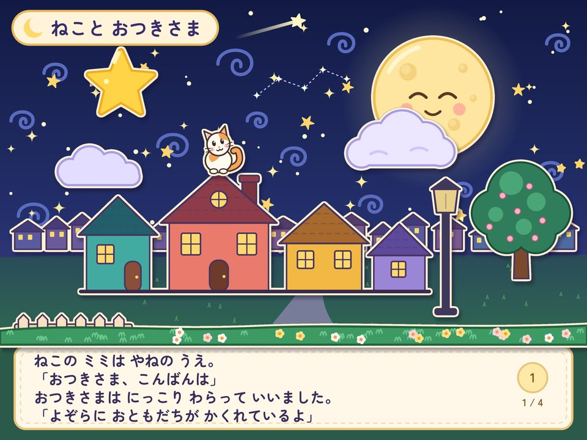

越前市ぷらぷらぼ AR えほんキット
印刷した絵本のページをスマホで映すと、絵が飛び出して、さわって遊べます。
見本「ねこと おつきさま」（4ページ）

- 印刷用 PDF を A4 横・「実際のサイズ」で印刷します（パソコンの画面に PDF を出しておくだけでも試せます）
- スマホで下の「カメラで見る」を開き、「カメラで はじめる」→ ページを映します
スマホで開くときのアドレス
sample/
自分の AR 絵本を作るには
キット pulapulabo-ehon-maker.zip をダウンロードして、3つの作りかたから えらびます。
- Claude で作る（いちばん かんたん）
Claude の新しいチャットにキットを添付して送ると、質問に こたえるだけで 絵本ができます - Claude で作って、絵を自分で描く
できた絵本の下絵（PNG）に、お絵かきアプリで 自分の絵を描いて 入れかえます - ぜんぶ自分で作る（自分のパソコン）
Node.js と VS Code を入れて、説明書を見ながら作ります
できた ZIP の中身を 自分の GitHub に上げると公開できます。